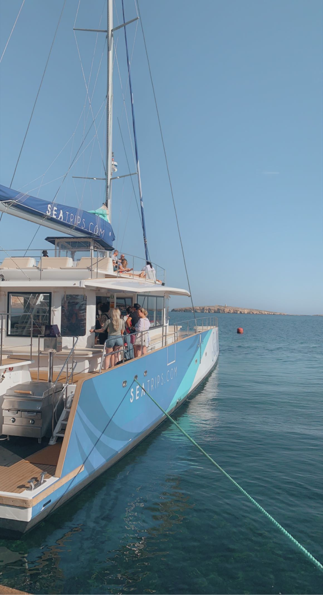
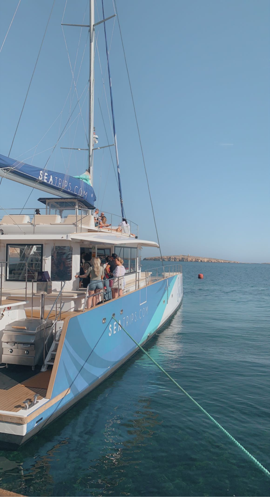

Artikel Blue lagoon
De eerste keer dat ik bij de Blue Lagoon op Malta kwam, was ik echt helemaal onder de indruk van hoe mooi het daar is. Gelegen op het kleine eiland Comino, voelt het alsof je in een paradijs terecht komt. Het water is zo helderblauw dat je het bijna niet kunt geloven, en het ruige landschap eromheen maakt het alleen maar mooier. Op zonnige dagen zie je het water veranderen in allerlei tinten turquoise. Echt een plaatje dat je niet snel vergeet.
Maar het gaat niet alleen om het uitzicht. De sfeer is super relaxed, mensen liggen lekker te zonnen, zwemmen of snorkelen in dat kristalheldere water. Het is echt een plek waar je even helemaal tot rust kunt komen en de rest van de wereld kunt vergeten. Voor wie wat meer actie wil, zijn er boottochten naar grotten in de buurt of je kunt een kajak huren om de kust te verkennen. En aan het eind van de dag, als de zon ondergaat, wordt alles nog magischer.
De Blue Lagoon is echt een must als je op Malta bent. Of je nou lekker wil chillen, zwemmen in het helderste water ooit, of wat avontuur zoekt, dit is een plek die je nooit meer vergeet.